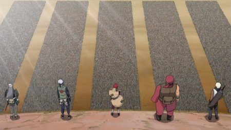

Шиноби Ренгогун (忍連合軍, "Альянс Шиноби") — коалиция коллективных военных сил шиноби
Этот союз был создан, чтобы противостоять угрозе организации Акацки и Биджу в надвигающейся Четвёртой мировой войне Ниндзя. Из-за нечестных действий кандидата на пост Рокудайме Хокаге, Шимура Данзо, другие Каге приняли решение обратиться с предложением о входе в союз к Хатаке Какаши, поскольку они считали его наиболее подходящим кандидатом на должность. Тем не менее, прежде чем Какаши стал Хокаге, Тсунаде вышла из комы и вернулась к своим обязанностям. После Гокаге Кайдан, Даймё стран одобрили коалицию Шиноби Годайкоку, официально одобрив создание Шиноби Ренгогун.
